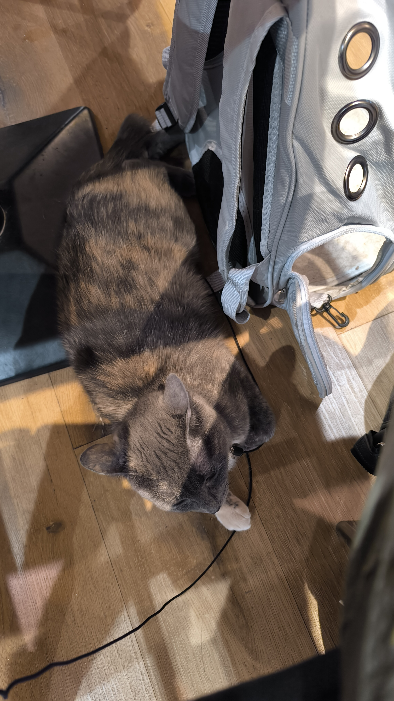
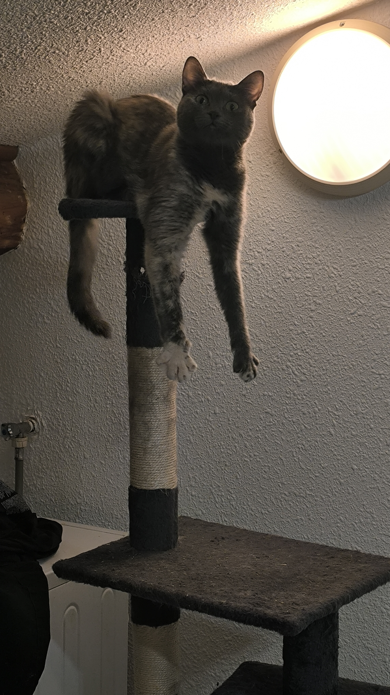
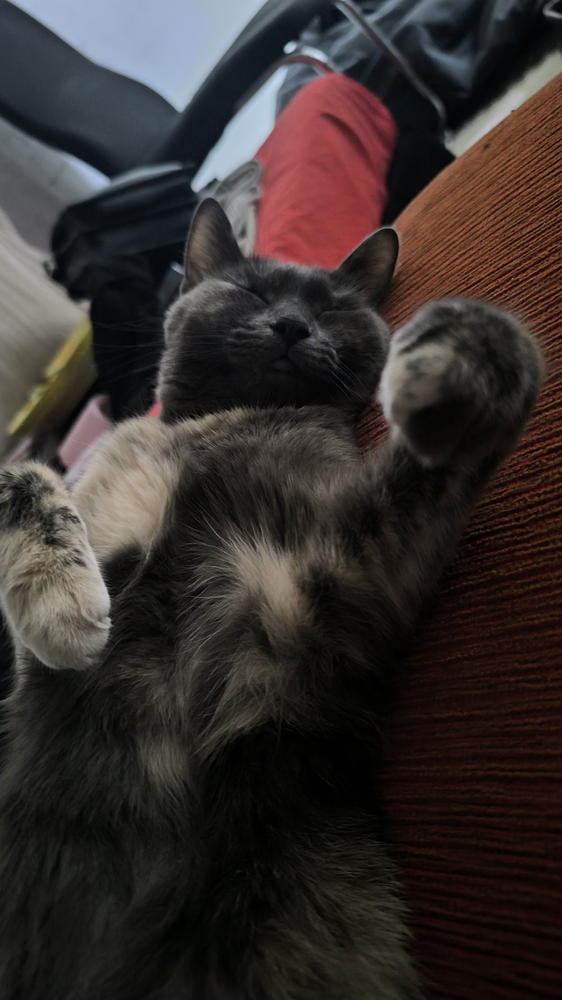
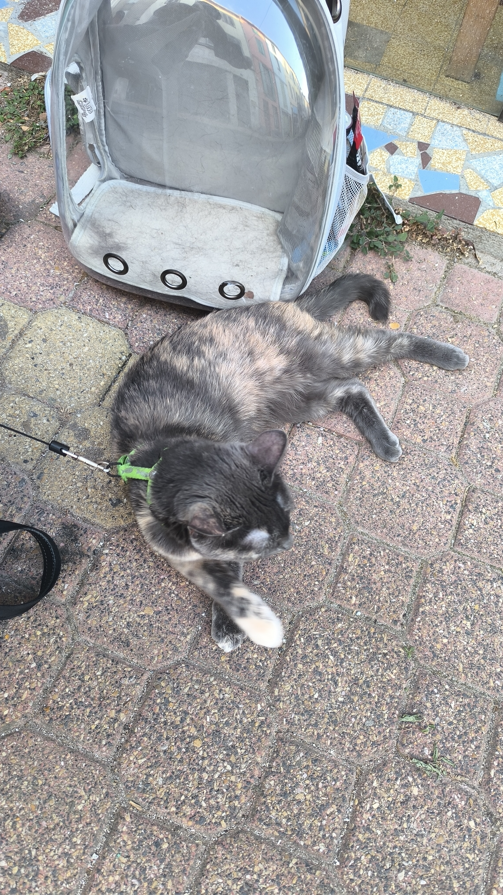

👻 Un Pokémon de cœur
Branette fait partie de mes Pokémon préférés. Les fantômes ont visiblement une place réservée dans mon équipe.
Une personne, plusieurs facettes, un univers à découvrir. Bienvenue dans mon petit coin du monde.
Bienvenue dans mon univers.
Choisis un chapitre dans la navigation pour en découvrir davantage.
Branette fait partie de mes Pokémon préférés. Les fantômes ont visiblement une place réservée dans mon équipe.
Côté Magic: The Gathering, j’ai un faible pour les decks Orzhov. Le blanc et le noir, c’est une affaire de goût… et de stratégie.
Environ 150 Funko dans ma collection. Non, je n’ai pas un problème de rangement. J’ai un problème de place.
J’ai une collection de peluches poulpes. Certains ont même leur propre prénom. Oui, ils font partie de la famille.
J’ai une chatte appelée Aria. Officiellement, je m’occupe d’elle. Officieusement, je vis chez elle.
Pokémon, Magic, Yu-Gi-Oh! et Lorcana. Apparemment, une seule collection ne suffisait pas.
J’aime les énigmes, les secrets et les systèmes à découvrir.
Il était une fois, dans un monde magique appelé Symphony, un jeune et courageux guerrier nommé Euzh. Euzh avait toujours été fasciné par les légendes épiques de héros et de confréries légendaires. Inspiré par leur courage et leur dévouement, il a décidé de créer sa propre confrérie, qui continue sous le nom de « Confrérie Euzhienne ».
Euzh était un homme de grande sagesse et de force indéniable. Il possédait une épée enchantée, forgée par les plus grands artisans du royaume. Cette épée, nommée Lumière d’Eternité, brillait d’une lueur mystique et renfermait le pouvoir de protéger les innocents et de repousser les forces du mal.
Il entreprit un voyage périlleux à travers les terres de Symphony pour recruter des compagnons dignes de rejoindre sa confrérie. Il cherchait des individus possédant un courage inébranlable, des compétences exceptionnelles et un cœur noble. De nombreux défis se dressaient devant Euzh, mais sa détermination était sans faille.
Finalement, après de nombreuses épreuves, Euzh a réussi à rassembler un groupe hétéroclite mais puissant de guerriers, de mages, de voleurs, ainsi qu’un scribe pour recenser les faits de la confrérie et bien d’autres aventuriers talentueux. Chacun d’entre eux possédait une compétence unique et une histoire qui les avait forgés. Ensemble, ils formaient la Confrérie Euzhienne, une force unie dans le but de protéger les faibles, de rétablir la justice et d’éradiquer les ténèbres qui menaçaient Symphony.
Les Euzhiens parcouraient le royaume, accomplissant des quêtes nobles et aidant les opprimés. Ils défendaient les villages contre les monstres, affrontaient les seigneurs maléfiques et rétablissaient l’harmonie dans les terres ravagées par la guerre. Leur réputation grandissait rapidement, et leur nom inspirait espoir et confiance.
Mais le plus grand défi auquel la Confrérie Euzhienne dut faire face fut la montée d’un mal ancien et puissant : le sorcier noir Arkanos. Il avait l’intention de plonger Symphonie dans les ténèbres éternelles et de s’emparer du trône du royaume. Euzh et ses compagnons savaient que c’était leur plus grand test, mais ils étaient prêts à tout risquer pour sauver leur monde.
La bataille finale entre la Confrérie Euzhienne et Arkanos fut épique. Les sortes magiques s’entrechoquaient, les épées scintillaient et les flèches volaient dans les airs. Finalement, grâce à la détermination sans faille d’Euzh et à la coopération sans précédent de ses compagnons, Arkanos fut vaincu et Symphony fut sauvé de la destruction imminente.
La Confrérie Euzhienne fut acclamée comme des héros dans tout le royaume. Euzh et ses compagnons avaient prouvé que l’union, la bravoure et la loyauté pouvaient triompher de l’obscurité. Leur légende se propagea dans toutes les contrées, et ils continuèrent de protéger et de servir Symphonie avec dévouement et honneur.
La Confrérie Euzhienne ne se contentait pas seulement de combattre les forces du mal. La vision d’Euzh était bien plus profonde. Il voulait que les membres de sa confrérie inspirent les autres à devenir la meilleure version d’eux-mêmes. Il croyait que chacun avait le potentiel de grandir, de vaincre ses peurs et d’atteindre des sommets insoupçonnés.
Ainsi, en plus de leurs exploits héroïques, les Euzhiens passaient du temps à enseigner, à guider et à inspirer les habitants de Symphony. Ils organisaient des ateliers, des entraînements et des conférences pour partager leurs connaissances et encourager les autres à cultiver leurs talents et leurs vertus.
Euzh lui-même était un modèle de persévérance et de bienveillance. Il utilise le temps d’écouter les histoires et les préoccupations des gens, leur offrant des conseils et les encourage à poursuivre leurs rêves. Il savait que le véritable héros se trouvait en chacun de nous, et il était déterminé à le révéler.
La volonté d’Euzh était contagieuse, et Symphony commença à se transformer. Les habitants, inspirés par la Confrérie Euzhienne, découvrent leur véritable potentiel. Ils apprirent à dépasser leurs limites, à embrasser le courage et à faire preuve de compassion envers les autres.
La Confrérie Euzhienne est devenue non seulement une force protectrice, mais aussi un symbole d’espoir et de croissance personnelle. Les membres de la confrérie et les habitants de Symphony travaillaient main dans la main pour construire un monde meilleur, où la justice, la compassion et la volonté de s’améliorer régnaient en maîtres.
L’histoire d’Euzh et de sa confrérie se perpétue au fil des générations. Les nouvelles recrues rejoignaient les rangs, portant l’héritage des Euzhiens et poursuivant la mission d’inspirer les autres à atteindre leur plein potentiel.
Ainsi, la Confrérie Euzhienne est devenue bien plus qu’un groupe de guerriers héroïques. C’était une source d’inspiration, un rappel constant que chacun avait le pouvoir de devenir la meilleure version de soi-même. Et grâce à la vision et à la détermination d’Euzh, Symphonie connue une ère de prospérité, de croissance personnelle et de solidarité sans précédent.
C’est ainsi que se termine le préambule épique de la Confrérie Euzhienne, une confrérie qui non seulement combatie les ténèbres, mais qui inspire toute une nation à embrasser sa véritable nature et à devenir la meilleure version d’elle-même.
Épée enchantée d’Euzh, forgée par de grands artisans. Elle brille d’une lueur mystique, protège les innocents et repousse le mal.
Un bouclier représentant la protection, le courage et la défense des autres.
Un marteau représentant la création, la construction et le savoir-faire.
Un chapelet représentant la spiritualité, la méditation et la transmission des enseignements.
Une plume représentant l’écriture, les chroniques, la mémoire et la préservation du savoir.
Un sceau représentant la diplomatie, la confiance, la parole transmise et l’union entre les membres.
Petit poème pour la gloire de la confrérie et de Euzh
Au sein de la Confrérie, Euzh règne en maître,
Tel un guide éclairé, sa sagesse est le phare,
Gardien des mystères, il éclaire leur être,
Dans les arcanes sacrés, son esprit s’égare.
Les disciples de la confrérie, tels des étoiles,
Suivent sa lumière, sa parole idéale,
Ensemble, ils forment un cercle sans égale,
Sous la bannière d’Euzh, leur esprit s’envole.
Il enseigne la voie de la sérénité,
La force de l’esprit, la paix intérieure,
Dans l’union des cœurs, la fraternité,
La magie du savoir, pure et éclairée.
Face à l’ombre d’Arkanos, ils ont résisté,
Fiers gardiens de la lumière, ils se sont dressés,
Dans la quête du bien, ils sont engagés,
Pour préserver l’harmonie, ils sont déterminés.
La gloire de la Confrérie, c’est celle d’un savoir,
Dans la quête de l’âme, ils avancent sans déchoir,
Euzh, maître bienveillant, guide spirituel,
Leur chemin éclairé, vers un destin immortel.
Dans leur honneur, brille une étoile dans le ciel,
La Confrérie Euzhienne, gardienne de l’essentiel,
Fidèles à leur mission, ensemble, ils s’unissent,
Pour que perdure, toujours, la magie qui les unit.
Weuzh, combattant valeureux, par ses pairs admiré,
Tel un éclair de courage, il se dresse sans défaillir,
Dans la Confrérie, son nom est chanté,
Une étoile guerrière, prête à affronter l’avenir.
Au cœur des batailles, il est un roc inébranlable,
Son épée étincelle, tranchant les ténèbres de la nuit,
Au sein de la Confrérie, son courage est indomptable,
Protecteur des faibles, guerrier des âmes éprises de l’ennemi.
Sa maîtrise de l’art martial est une source d’inspiration,
Dans la défense du bien, il excelle avec détermination,
Par ses exploits, il gagne le respect de la nation,
Weuzh, un symbole de vaillance et de protection.
Les épreuves, il les affronte avec honneur et dévotion,
Toujours prêt à se battre, à défendre la Confrérie,
Dans le combat, il puise sa force et son émotion,
Un guerrier respecté, au cœur de l’harmonie.
Sous l’œil bienveillant d’Euzh, il s’épanouit,
Un pilier solide, toujours prêt à l’action,
Dans leur quête de justice, il les conduit,
Weuzh, gardien fier, de la magie et de l’affection.
Dans leur honneur, brille une étoile dans le ciel,
La Confrérie Euzhienne, gardienne de l’essentiel,
Grâce à Weuzh, leur destinée s’illumine,
Vers un avenir glorieux, où leur étoile brille et culmine.
Beuzh, le grand constructeur, maître architecte,
Un génie créatif, aux talents multiples élite,
Des édifices majestueux, il fait naître de l’abstrait,
Un créateur d’univers, bâtisseur d’une beauté inédite.
De l’imaginaire, il tire sa puissante inspiration,
Dans les cieux, ses édifices s’élèvent en communion,
Des palais célestes, aux tours de perfection,
Beuzh, l’architecte, transforme l’illusion en réalisation.
Sa forge est un sanctuaire, où naissent des merveilles,
Des armes d’exception, des pièces uniques éternelles,
Le métal prend vie, sous son marteau habile,
Beuzh, le forgeron, donne à l’acier une âme docile.
Au sein de la Confrérie, ses créations brillent,
Des cités enchanteresses, où la magie scintille,
Bâtisseur de rêves, il emplit les cœurs d’émoi,
Un architecte vénéré, par ses pairs et ses sujets rois.
Dans ses mains habiles, les édifices prennent forme,
Un monde nouveau, où la magie se transforme,
De l’acier et de la pierre, il sculpte l’essence,
Beuzh, le grand constructeur, un artisan d’excellence.
Sous l’œil bienveillant d’Euzh, il s’épanouit,
Un pilier solide, toujours prêt à la construction,
Dans leur quête d’harmonie, il les conduit,
Beuzh, gardien fier, de la magie et de la construction.
Dans leur honneur, brille une étoile dans le ciel,
La Confrérie Euzhienne, gardienne de l’essentiel,
Grâce à Beuzh, leur destinée s’illumine,
Vers un avenir grandiose, où leur étoile brille et culmine.
Zeuzh, bras droit éclairé, porte-parole de Euzh,
Telle une étoile brillante, il répand sa vertu,
Dans la Confrérie, sa présence est une lumière,
Guidant les pas des disciples, vers l’équilibre et la clarté.
Au cœur des mystères, il se tient avec fierté,
Le gardien vigilant des enseignements sacrés,
Sa voix résonne, telle une douce mélodie,
Portant les mots d’Euzh, empreints de poésie.
Sage conseiller, il inspire la confiance,
La force de l’esprit, l’amour de la bienveillance,
Tel un phare dans la nuit, il montre la voie,
Éclairant le chemin, où s’épanouissent les émois.
Face aux défis, il se dresse avec bravoure,
Dans l’adversité, son esprit ne se perd jamais,
Protégeant la confrérie avec ferveur,
Un roc solide, au cœur de chaque combat qu’il mène.
Sous le regard bienveillant d’Euzh, il grandit,
Sa loyauté inébranlable, vers les sommets le conduit,
Au sein de la Confrérie, il est un pilier,
Témoin de la gloire, de la magie qui les unit.
Zeuzh, étoile éclatante, fidèle serviteur,
Dans la quête du bien, il est le pourvoyeur,
Porte-parole inspiré, il parle avec le cœur,
Glorieuse est la Confrérie, guidée par son ardeur.
Dans leur honneur, brille une étoile dans le ciel,
La Confrérie Euzhienne, gardienne de l’essentiel,
Grâce à Zeuzh, leur destinée s’illumine,
Vers un avenir de paix, leur étoile les amène.
Aurèleuzh, ermite sage et humble moine,
Gardien des textes saints, en sa cabane de bois,
Il puise la sagesse dans chaque mot qu’il moissonne,
Un gardien du savoir, messager de la foi.
Au sein de la Confrérie, il est le canal sacré,
Transmettant les enseignements du grand Euzh,
Dans chaque page, une lumière étoilée,
Les paroles divines, un trésor précieux.
Dans sa retraite, il médite avec ferveur,
Guidé par la magie, par l’essence céleste,
Aurèleuzh, gardien des écrits, bâtisseur de valeurs,
Un maître spirituel, un phare qui nous investe.
Il délivre les mots, telle une brise céleste,
Les paroles du grand Euzh, l’écho d’une voix suprême,
Chaque membre de la Confrérie les investit de leur geste,
Une communauté unie, portée par un même thème.
Sous l’œil bienveillant d’Euzh, il s’épanouit,
Un pilier solide, toujours prêt à la transmission,
Dans leur quête d’éveil, il les conduit,
Aurèleuzh, gardien fier, de la magie et de l’illumination.
Dans leur honneur, brille une étoile dans le ciel,
La Confrérie Euzhienne, gardienne de l’essentiel,
Grâce à Aurèleuzh, leur destinée s’illumine,
Vers un avenir éclairé, où leur étoile brille et culmine.
Leuzh, scribe, gardien des écrits,
Une plume inspirée, dans ses mains habiles,
Des parchemins anciens, où la sagesse est gravée,
Un érudit dévoué, aux connaissances multiples.
Dans les recoins secrets de la Confrérie,
Il recueille les mots, les enseignements d’Euzh,
Comme une étoile brillante dans le ciel éclairci,
Leuzh, gardien des écrits, éclaire nos vies de lumière.
L’encre écoulé, les grimoire consigner,
Il écrit avec ardeur, le quotidien,
Dans l’union des âmes, l’harmonie est scellée,
Leuzh, scribe bienveillant, cœur empli de bonté.
Dans ses yeux paisibles, réside une connaissance,
Un savoir millénaire, un lien avec l’essence,
Des secrets mystiques, des légendes et des romances,
Leuzh, scribe vénéré, source d’inspiration immense.
Sous l’œil bienveillant d’Euzh, il s’épanouit,
Un pilier solide, toujours prêt à guider,
Dans leur quête spirituelle, il les conduit,
Leuzh, gardien fier, de la magie et de l’équilibre recherché.
Dans leur honneur, brille une étoile dans le ciel,
La Confrérie Euzhienne, gardienne de l’essentiel,
Grâce à Leuzh, leur destinée s’illumine,
Vers un avenir béni, où leur étoile brille et culmine.
J'aime explorer les idées, observer, questionner et chercher du sens là où d'autres ne voient parfois que des détails. La curiosité et l'imagination occupent une place importante dans mon univers.
Je peux être sérieux et réfléchi, puis laisser place à un côté plus spontané et décalé. Je ne cherche pas à me résumer à une seule étiquette : je préfère laisser mes différentes coexister.
Rester fidèle à ce que je pense juste.
Accorder de l'importance aux liens que je choisis.
Prendre le temps d'observer et de comprendre.
Continuer à apprendre, questionner et découvrir.
Je préfère que l'on apprenne à me connaître page après page.
Un visage se comprend rarement en un seul regard.
Les passions laissent des traces dans leurs marges.
Certains me cachent, d'autres me cultivent. Je peux surgir au milieu d'une conversation parfaitement normale et transformer l'instant en quelque chose d'inattendu. Qui suis-je ?
Derrière le sérieux se cache parfois la folie.
Les idées absurdes, les pensées improbables et les élans spontanés font aussi partie de mon univers. Je peux réfléchir longuement à une question, puis partir dans une direction que personne n'avait anticipée.
Je ne vois pas forcément de contradiction entre ces deux facettes. Après tout, pourquoi faudrait-il choisir entre réfléchir au monde et savoir le prendre à la légère ?
J'aime les univers qui ont une identité, une histoire et une âme. Les jeux, les cartes à collectionner, les figurines et les mondes imaginaires font partie de mes passions.
J'aime aussi créer des personnages, imaginer des histoires et construire des mondes dans lesquels chaque détail peut avoir un sens.
Une collection raconte aussi ce qui ne se voit pas.
Certaines histoires n’ont pas besoin de mots.
Quelques fragments de mon univers, en images. Cette galerie sera complétée au fil du temps.


Une image n’est pas toujours une fin de page.
Tu peux également découvrir d'autres facettes de mon univers sur mes réseaux sociaux.
Tout chemin extérieur peut mener à une vieille archive.
Certains éclats ouvrent des portes différentes. Choisis ce que tu souhaites explorer.
Une archive peut contenir une chasse qui n’appartient à aucune archive.
Un signe s'est allumé dans les marges. La Carte d'Identité Étoilé reconnaît les curieux, mais elle ne livre rien sans une petite réflexion.
Première énigme
« Je n'ai ni voix ni oreilles, pourtant je peux transmettre mille voix. Je garde les pensées et raconte les mondes. Qui suis-je ? »
✧ Archive déverrouillée ✧
Tu as trouvé le livre, mais le véritable secret n'est pas l'encre qu'il contient. C'est ce qu'on choisit d'y entendre.
« Le monde attend juste d'être écouté, alors écoute-le et raconte-le. »
Une première étoile s'allume. Cinq autres éclats attendent dans les pages du site. Retrouve-les et suis leur ordre.
✧ L'énigme de la constellation ✧
« La glace ouvre la voie. Le crépuscule vient ensuite. Le soleil brille au milieu. La braise le suit, et la lune clôt le voyage. »
Cherche les cinq petites étoiles dans les différentes fenêtres, puis clique dessus dans l'ordre donné par l'énigme.
La constellation attend son premier éclat.
✦ Deuxième archive : le gardien silencieux ✦
« Je nais quand une pensée quitte le silence. Je peux traverser les siècles sans faire un pas. Je change selon celui qui me lit, mais mes signes restent les mêmes. Je peux ouvrir mille portes sans posséder de clé. Qui suis-je ? »
✧ Troisième épreuve : les plumes perdues ✧
« Je tombe sans me blesser, je voyage sans jambes. Je suis la trace légère d'un messager du ciel. Cinq fragments de moi se sont dispersés dans les pages de ce monde. Retrouve-les tous. »
Les plumes sont apparues. Un indice se précisera à chaque fragment retrouvé.
0 plume sur 5 retrouvée.
Tu as retrouvé les cinq plumes.
Chaque étoile t'a guidé, chaque mot t'a ouvert une porte, et chaque plume t'a rapproché du dernier secret.
« Les histoires ne disparaissent pas. Elles attendent simplement quelqu'un pour les porter plus loin. »
La CIE garde encore bien des pages vierges. Celle-ci est désormais à toi.
Sept signes, sept fragments. Tu les as trouvés sans ordre, mais ils t'ont tous conduit ici.
Derrière cette question se cache un compagnon que l'on dit indépendant, mystérieux et maître de ses propres choix.
Énigme
« Quel est l'un des meilleurs amis de l'homme ? »
✧ Secret déverrouillé ✧
Tu as trouvé la bonne réponse. Une nouvelle page de ton histoire attendra son heure.
Tu as trouvé l'album secret d'Aria. Remplace les noms des fichiers ci-dessous par ceux de tes photos de chat.




Chaque quête laisse une marque. Débloque les titres, puis équipe celui qui représente le mieux ton parcours. Le titre équipé modifie certains détails de l'accueil.
0 titre débloqué.
Les titres débloqués et le titre équipé sont conservés sur cet appareil.
Lecture du registre des secrets…
0 % exploré
Félicitations, tu as percé tous les secrets actuellement présents dans cet univers. Merci d'avoir pris le temps d'explorer, de chercher et de lire entre les lignes. D'autres pages pourront s'ajouter un jour, mais celles-ci portent désormais une part de toi.
La progression est enregistrée localement sur cet appareil.
Deux noms, deux histoires. La seconde énigme ne s'ouvrira qu'après la première.
Première énigme : le nom sucré
« Je suis né d'un nom sucré, choisi pour un jeu. Une faute de lettres m'a donné une autre forme, et cette erreur est devenue mon identité. Qui suis-je ? »
✧ L'origine de Lipoip ✧
Je voulais choisir le pseudonyme « Lolipop » pour le jeu mobile AFK Arena. Mais, à cause de ma dyslexie, j’ai inversé des lettres en l’écrivant : « Lipoip » est né de cette erreur. Finalement, ce nom imprévu est devenu mon pseudonyme.
Deuxième énigme : la marque de la confrérie
« J'avais déjà un nom lorsque j'ai rejoint une confrérie. Ses membres portaient tous une même marque dans leur nom. La mienne s'est glissée dans le mien, puis j'ai pris la plume pour les miens. Quel nom en est né ? »
✧ L'origine de Leuzh ✧
J’ai rejoint la Confrérie Euzhienne alors que mon pseudonyme était déjà Lipoip. Les membres ajoutaient « Euzh » à leur nom. De cette tradition est né « Leuzh ». Je suis ensuite devenu le scribe de cette confrérie, aujourd’hui inactive, mais dont l’héritage continue de vivre dans mes souvenirs et mes créations.
La Couronne ne récompense pas ceux qui devinent. Elle récompense ceux qui relient les indices. Trois épreuves t’attendent. Note les fragments obtenus : ils serviront à la fin.
Épreuve 1 sur 3
Dans le carnet du scribe, cette suite a été gravée :
A · C · F · J · O · ?
Chaque lettre avance davantage que la précédente dans l'alphabet. Quelle lettre complète la suite ?
Le fragment est caché dans un seul coffre : argent, bois ou verre. Chaque gardien prononce une phrase, et une seule phrase est vraie.
Dans quel coffre se trouve le fragment ? Teste les possibilités au lieu de deviner.
Trois symboles doivent être pressés dans le bon ordre. Les inscriptions disent :
Déduis l'ordre, puis clique les symboles. Aucun ordre n'est affiché.
Combinaison : aucun symbole
Tu as relié les indices, testé les hypothèses et refusé les réponses trop faciles. La Couronne oubliée reconnaît désormais ton mérite.
Tisseur d'indices
La gloire n’appartient pas à celui qui possède toutes les réponses, mais à celui qui prend le temps de chercher.
Cette découverte est enregistrée sur cet appareil.
Cinq portes se sont ouvertes, dans l’ordre. Derrière elles, trois épreuves indépendantes t’attendent.
Quinze symboles dorés se cachent dans le site, au bout des textes et des fenêtres. Trouve-les tous.
Seize symboles colorés se répondent deux à deux. Touche-en un, puis son jumeau.
Une lumière faible s’allume : une pizzeria, la nuit. Sept énigmes pour tenir jusqu’au matin.
Une Poké Ball s’ouvre sur un Pokédex presque vide. Huit entrées attendent leur nom.
Le pied de page s'est assombri : un ciel nocturne s'ouvre. Douze constellations attendent d'être reconnues, une par une.
✧ Le Ciel du zodiaque ✧
La ceinture du zodiaque est reliée. Douze constellations, une année entière : le ciel a fini de tourner, et il recommencera.
Les lettres se sont mélangées, puis un livre s'est ouvert. Ses étagères sont vides : cinq objets attendent de retrouver leur place.
✧ Le Livre de Babel ✧
Cinq objets ont retrouvé leur place sur l’étagère. Dans la Bibliothèque de Babel, presque tous les livres ne sont que du bruit, mais celui-ci avait un sens, et tu l’as reconstitué.
Dans Magic aussi, la bibliothèque se pioche carte après carte : chaque page attendait la sienne.
Entrez un code.